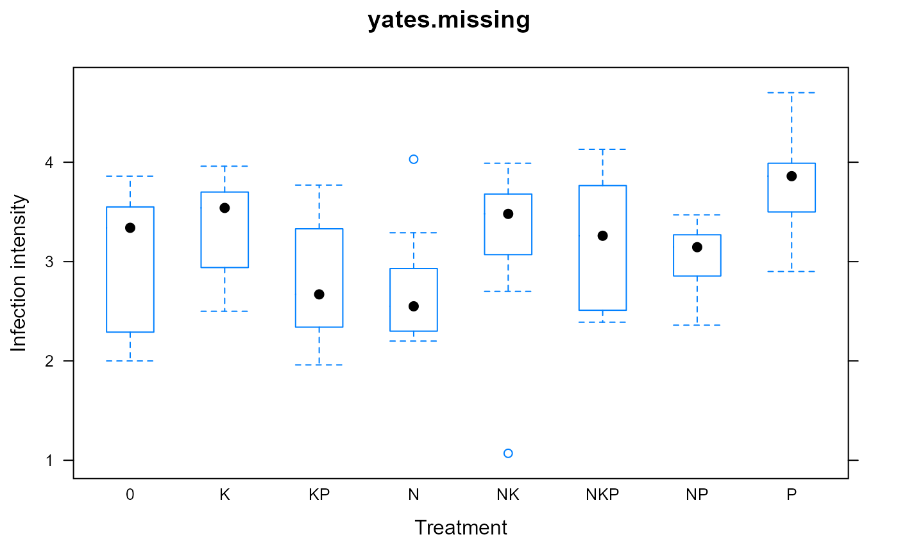

yates.missing.RdPotato factorial experiment with missing values
A data frame with 80 observations on the following 3 variables.
trttreatment factor with levels 0 K
N P NK KP NP NKP
blockblock, 10 levels
yinfection intensity
The response variable y is the intensity of infection of potato
tubers innoculated with Phytophthora Erythroseptica.
Yates (1933) presents an iterative algorithm to estimate missing values in a matrix, using this data as an example.
F. Yates, 1933. The analysis of replicated experiments when the field results are incomplete. Emp. J. Exp. Agric., 1, 129--142.
Steel & Torrie, 1980, Principles and Procedures of Statistics, 2nd Edition, page 212.
library(agridat) data(yates.missing) dat <- yates.missing libs(lattice) bwplot(y ~ trt, data=dat, xlab="Treatment", ylab="Infection intensity", main="yates.missing")libs(reshape2) mat0 <- acast(dat[, c('trt','block','y')], trt~block, id.var=c('trt','block'), value.var='y') # Use lm to estimate missing values. The estimated missing values # are the same as in Yates (1933) m1 <- lm(y~trt+block, dat) dat$pred <- predict(m1, new=dat[, c('trt','block')]) dat$filled <- ifelse(is.na(dat$y), dat$pred, dat$y) mat1 <- acast(dat[, c('trt','block','pred')], trt~block, id.var=c('trt','block'), value.var='pred') # Another method to estimate missing values via PCA libs("nipals") m2 <- nipals(mat0, center=FALSE, ncomp=3, fitted=TRUE) # mat2 <- m2$scores <!-- %*% t(m2$loadings) --> mat2 <- m2$fitted # Compare ord <- c("0","N","K","P","NK","NP","KP","NKP") print(mat0[ord,], na.print=".")#> B01 B02 B03 B04 B05 B06 B07 B08 B09 B10 #> 0 3.55 2.29 . 2.00 3.34 3.83 3.86 3.50 2.23 2.91 #> N 2.30 4.03 2.54 2.82 3.29 2.93 . 2.55 2.20 2.30 #> K 3.96 3.62 3.46 2.50 2.94 3.70 3.82 2.54 3.18 3.69 #> P 2.99 3.99 2.90 3.97 4.49 4.70 3.86 . 3.50 3.59 #> NK . 3.07 3.49 1.07 3.99 3.48 3.80 3.68 3.24 2.70 #> NP 2.36 3.47 2.64 3.17 3.26 3.28 . . 3.07 3.12 #> KP 2.16 2.34 1.96 2.60 3.77 . 3.20 3.47 2.67 3.33 #> NKP 3.16 2.52 2.39 3.68 . . 3.85 3.36 2.50 4.13#> B01 B02 B03 B04 B05 B06 B07 B08 B09 B10 #> 0 2.75 3.00 2.58 2.56 3.43 3.46 3.50 3.11 2.66 3.05 #> N 2.57 2.82 2.39 2.38 3.25 3.28 3.31 2.93 2.47 2.87 #> K 3.08 3.33 2.91 2.89 3.77 3.79 3.83 3.44 2.99 3.39 #> P 3.53 3.78 3.36 3.34 4.21 4.24 4.27 3.89 3.43 3.83 #> NK 2.88 3.13 2.71 2.69 3.57 3.59 3.63 3.24 2.79 3.18 #> NP 2.86 3.11 2.69 2.67 3.54 3.57 3.61 3.22 2.77 3.16 #> KP 2.63 2.87 2.45 2.43 3.31 3.33 3.37 2.98 2.53 2.93 #> NKP 3.05 3.30 2.88 2.86 3.73 3.76 3.79 3.41 2.95 3.35#> B01 B02 B03 B04 B05 B06 B07 B08 B09 B10 #> 0 3.56 2.17 3.00 1.58 3.46 3.58 3.80 3.44 2.53 3.09 #> N 2.37 3.63 2.52 2.84 3.01 3.07 3.03 2.46 2.72 2.72 #> K 3.59 3.92 3.56 2.22 3.29 3.52 3.82 2.91 3.14 3.01 #> P 2.77 4.05 2.77 4.09 4.35 4.27 3.99 3.69 3.36 3.88 #> NK 3.74 2.94 3.38 1.78 3.44 3.64 3.92 3.30 2.85 3.11 #> NP 2.59 3.67 2.64 3.18 3.50 3.52 3.41 2.95 2.92 3.15 #> KP 2.23 2.29 1.92 3.03 3.69 3.56 3.26 3.35 2.41 3.25 #> NKP 2.77 2.60 2.39 3.12 4.07 3.98 3.75 3.75 2.74 3.60#> [1] 17.68986#> [1] 5.42107